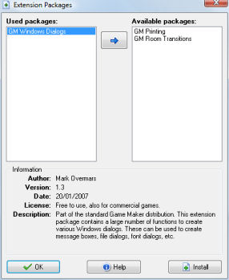
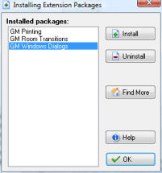

Extension packages extend the possibilities of Game Maker. An extension package can add a set of actions to Game Maker or it adds a number of additional functions and constants to the GML language built into Game Maker. When extension packages are available to you, help about these is placed in the Help menu.
When double clicking on the Extension Packages resource item the following form is shown:

In this form you can indicate which extension packages must be used in the game. On the left there is the list of Used packages and on the right is the list of Available packages. To move a package from one list to the other, simply select it and press the button between the list. When selecting a package a short description is given at the bottom. Further help is available by pressing the Help button.
Extension packages are an extremely powerful part of Game Maker. A few extension packages are provided with Game Maker but many more will become available through the website. To install new packages or uninstall existing ones, press the Install button. The following form is shown

You will see a list of all extension packages installed. By selecting a package and clicking the Uninstall button the package is removed from the system.
Install packages are distributed in the form of a .gex file. You can find a number of such packages on our website which you can go to by pressing the button Find More. Once you donwloaded such a package file on your computer, press the Install button and select the package file. It will then be installed in the system.
If you want to create your own extension packages, please check out the information that is available on http://www.yoyogames.com/extensions.